Enterprise Resource Planning
A concept redesign of an enterprise ERP system, based on the outdated interface I use every day at work — a boxy, cluttered UI with an unintuitive menu structure. The goal: make complex business workflows feel clear, calm, and efficient.
The Problem.
The ERP I use at work is functional, but painful: the interface looks dated, the layout is dense with boxes, and the menu structure makes finding features feel like guesswork. Users spend extra time just navigating — time that should go to the work itself.
That daily frustration became the starting point of this project: what would this tool look like if it were designed around the people who use it?
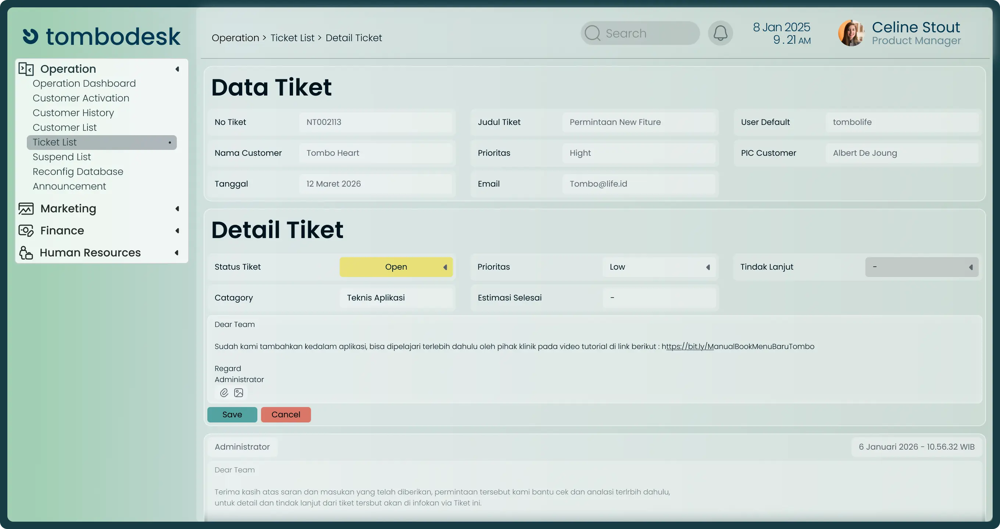
Research: learning from real users.
Because this is a self-initiated concept, I grounded it in three research sources: my own daily experience as an ERP user, desk research — analyzing ERP interfaces and design patterns from other products — and short feedback sessions with coworkers who use the same ERP in their daily work.
Three problems kept coming up: the menu didn't match how users think about their tasks, the dense boxy layout made scanning data slow, and inconsistent visuals made every screen feel unfamiliar. These findings shaped every design decision that followed.
A consistent visual foundation.
The first major decision was to build a design system before designing any screens. Colors, typography, spacing, and reusable components were defined upfront — so every screen would feel familiar, and the redesign of a large, complex interface would stay consistent and efficient.
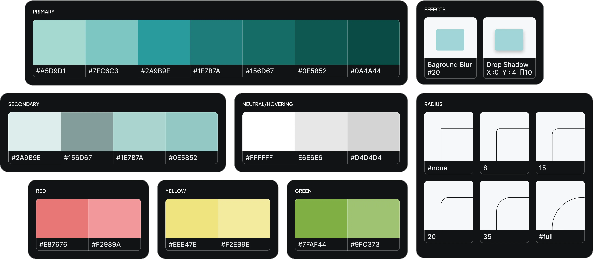
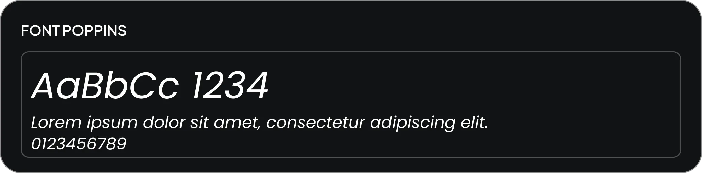
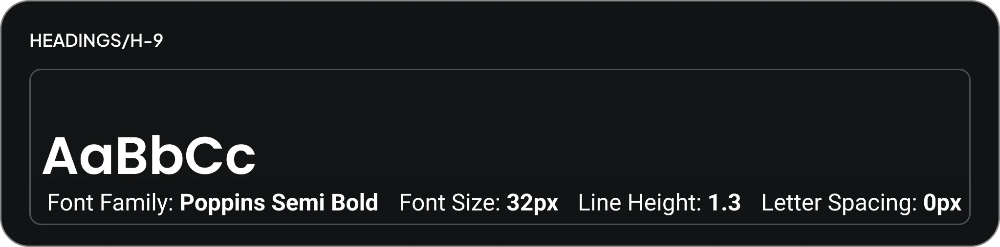
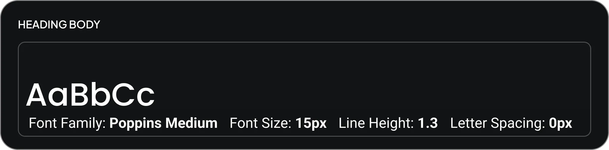
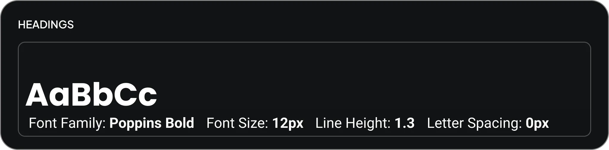
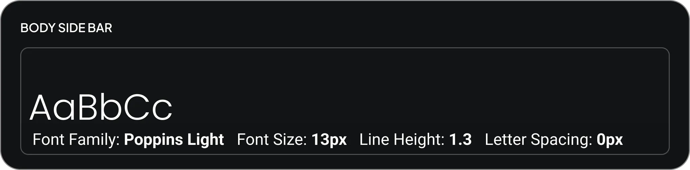
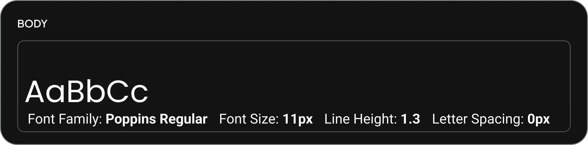
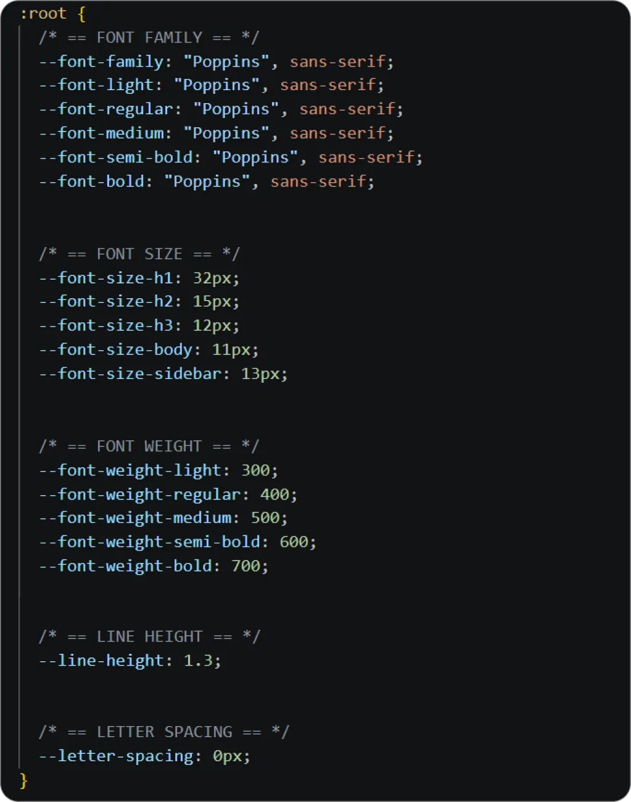
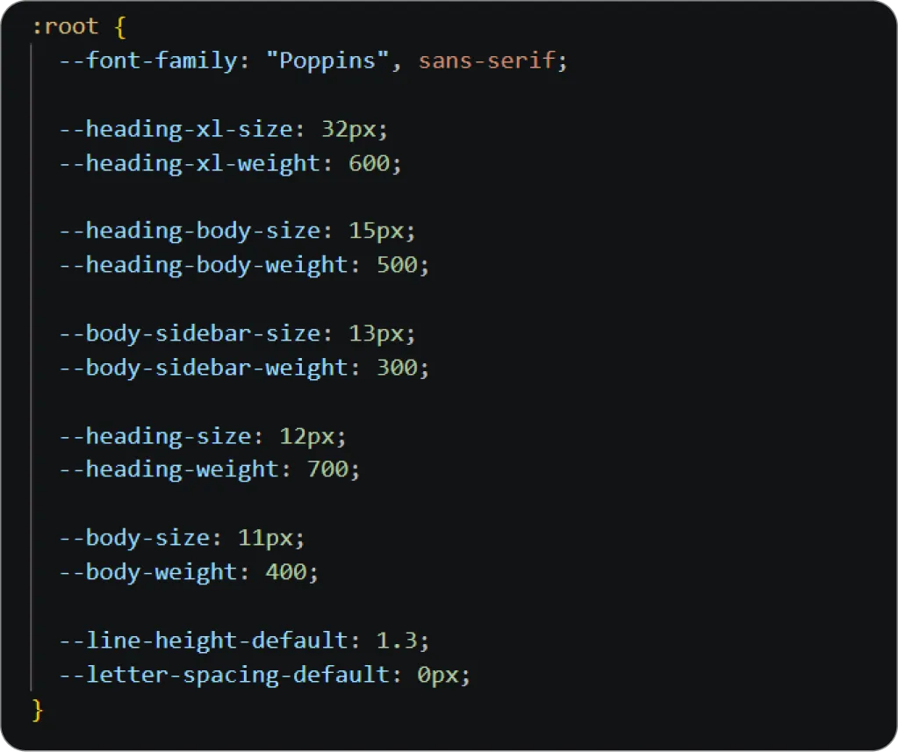

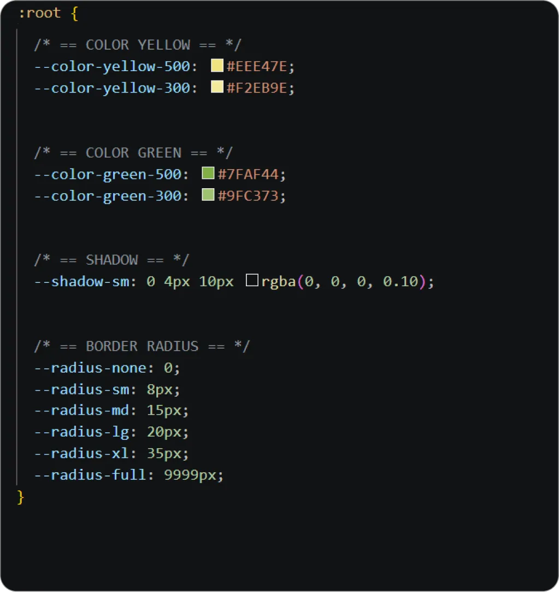
Design system - colors, typography, spacing and visual elements.
Reusable components for a scalable interface.
Reusable components were designed to create a consistent interface while making future iterations easier and more efficient.
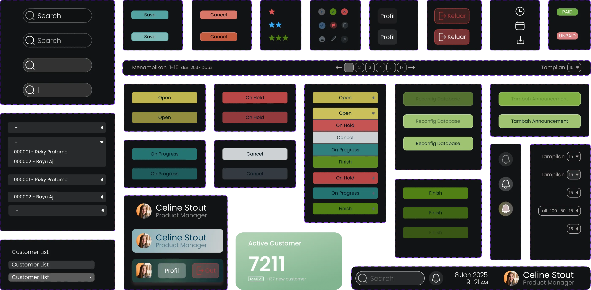
Component library - reusable UI elements for the ERP interface.
What I worked on.
UX Research
Desk research, interface benchmarking, and feedback sessions with daily ERP users.
User Flow
Restructured the menu and core task flows around real user needs.
UI Design
Built the design system and a modern interface with a clear hierarchy.
Designing a better workflow.
With the problems mapped, I restructured the user flow around how users actually work — not how the system was originally organized. The menu was grouped by task, and every screen follows a clear information hierarchy.
The result: important data comes first, key actions are always visible, and the most frequent workflows — checking data and processing daily operations — take fewer steps than before. This is what those decisions look like in the final screens:
The Outcome.
I shared the prototype with coworkers who use an ERP system in their daily work. The response confirmed the direction: the interface felt significantly more modern and comfortable for long working sessions, and the restructured flow made tasks easier to understand — without needing an explanation.
This project also shaped my process: even without a dedicated research budget, starting from real daily experience and validating with real users is enough to surface problems worth solving. Given more time, I would run structured usability tests with task-completion metrics to quantify the improvement.
Explore the final experience.
Explore the complete interactive prototype and experience the final ERP interface and user flow.